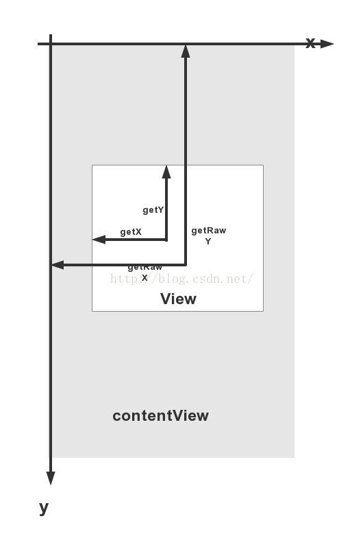
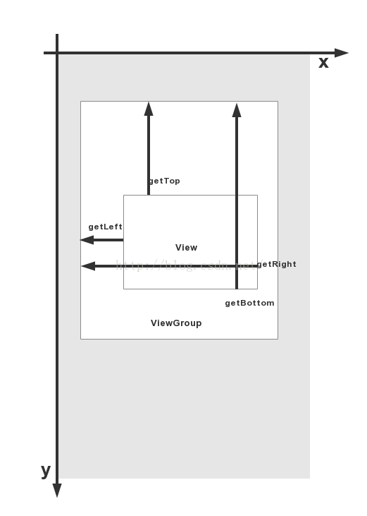

1.View坐标系


我随便设置了一个View，打印如下两句日志，可验证出结果：
(1)Bottom确实比Top的值大，即Y坐标轴的正方向是向下的
(2)height = bottom - top; width = right - left1
2Log.d("thmtest","top = "+view.getTop()+" & left = "+view.getLeft() +" &bottom = "+view.getBottom()+ "& right = "+view.getRight());
Log.d("thmtest", "width = "+view.getWidth() +" &height = "+view.getHeight());
1 | 08-09 13:58:55.125 18893-18893/com.thm.testview D/thmtest: top = 250 & left = 0 &bottom = 467& right = 873 |
2、MotionEvent、TouchSlop
MotionEvent
getX()/getY()和getRawX()/getRawY()的区别
前者是相对于控件的原点，即左上角，(left, top)
后者是相对于坐标系的原点，即屏幕的左上角，(0,0)
TouchSlop
最小滑动距离，手指滑动低于这个值，认为不是滑动操作
获取方式：1
2int touchSlop = ViewConfiguration.get(getContext())
.getScaledTouchSlop();
3、VelocityTracker
可用于获取滑动速度，用于做一些手势速度的相关逻辑处理
使用方法：1
VelocityTracker mVelocityTracker = VelocityTracker.obtain();
1 | public boolean onTouchEvent(MotionEvent event) { |
4、GestureDetector
手势动作处理基本上都在onTouchEvent中，
但是GestureDetector也可用于监听用户的手势动作，做出处理
使用方法：1
2
3
4
5
6
7
8
9
10
11
12
13
14
15
16
17
18
19
20
21
22
23
24
25
26
27
28
29
30
31
32
33
34
35
36
37
38
39
40
41
42
43private GestureDetector mGestureDetector = new GestureDetector(getContext(),new GestureListener());
public boolean onTouchEvent(MotionEvent event) {
return mGestureDetector.onTouchEvent(event);
}
class GestureListener extends GestureDetector.SimpleOnGestureListener{
public boolean onSingleTapUp(MotionEvent e) {
return false;
}
public void onLongPress(MotionEvent e) {
}
public boolean onScroll(MotionEvent e1, MotionEvent e2,
float distanceX, float distanceY) {
return false;
}
public boolean onFling(MotionEvent e1, MotionEvent e2, float velocityX,
float velocityY) {
return false;
}
public void onShowPress(MotionEvent e) {
}
public boolean onDown(MotionEvent e) {
return false;
}
public boolean onDoubleTap(MotionEvent e) {
return false;
}
public boolean onDoubleTapEvent(MotionEvent e) {
return false;
}
public boolean onSingleTapConfirmed(MotionEvent e) {
return false;
}
}